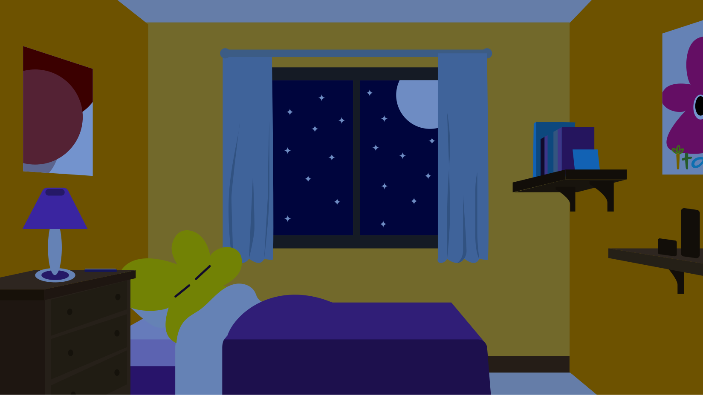

Inicio
Aprende
Juegos
Reacción rápida
Sopa de letras
Un día de decisiones
Llena tu canasta
Una noche tranquila

z z Z
¡Oh!
☾
☀
00:30
Ⅱ
☺
100%
0 apagadas
¿Cuánto necesita dormir?
Horas recomendadas al día, según la edad.
Edad
Horas
0–3 meses
14–17
4–12 meses
12–16*
1–2 años
11–14*
3–5 años
10–13*
6–12 años
9–12
13–17 años
8–10
18–60 años
7 o más
61–64 años
7–9
65 años o más
7–8
* Incluye siestas. Cada persona puede tener necesidades distintas.
Fuente:
CDC · Acerca del sueño
.
Cerrar